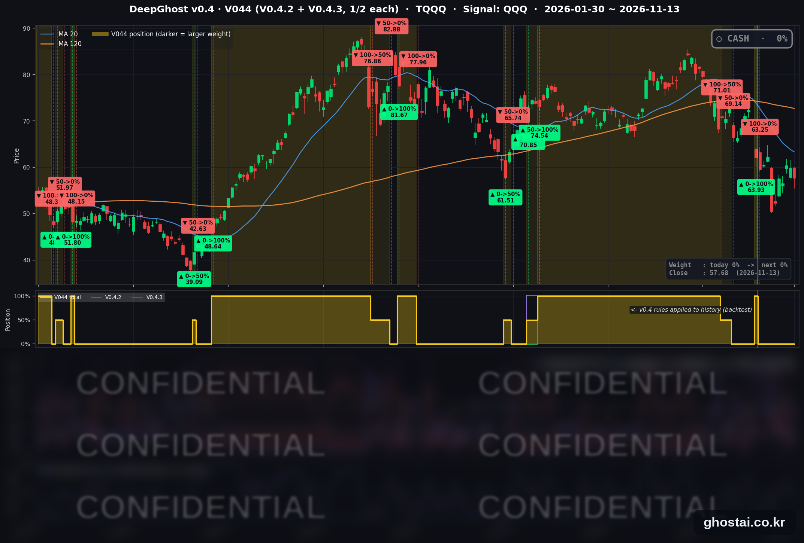

AMD·브로드컴 하락에 나스닥 200일선까지.
· Ghost.AI 데일리 리포트
👻 매일 시그널과 히스토리를 홈페이지에서 한눈에 → www.ghostai.co.kr
회원 페이지 안내 — 회원 가입하시면 공식 전략 v0.4의 TQQQ 비중과 판단 근거, 원본 차트, 분석 레포트를 매일 확인하실 수 있습니다. 회원 페이지는 블로그·유튜브보다 먼저 업데이트됩니다. 지금 베타 회원을 받고 있으며, 이메일과 필명만으로 가입하실 수 있고 서비스 사용료는 받지 않습니다. 이메일 확인 후 바로 이용하실 수 있습니다.
이번 주 크게 오른 AI 하드웨어주가 금요일에 상승분 일부를 되돌리면서 나스닥은 0.91% 내려 200일선과 사실상 같은 자리에서 마감했습니다. 지수와 달리 S&P 500 구성종목 493개 중 314개가 올랐고 애플은 사상 최고 종가를 기록했습니다. 10월 PPI 는 예상보다 조금 낮았지만 10년물 금리는 5.154% 로 올랐습니다. 주간으로는 S&P 500 이 2.51%, 나스닥이 2.27% 올라 8월 7일로 끝난 주 이후 가장 많이 올랐습니다. TQQQ 는 3.67% 내렸고, 전략은 현금 보유 중입니다.
📊 오늘의 매매 신호
| 항목 | 내용 |
|---|---|
| 오늘의 신호 | 🟡 신규 신호 없음 — 전략은 현금 보유를 유지합니다 |
| 포지션 상태 | 💵 현금 보유 중 (OUT OF POSITION) |
| 현금 보유 기간 | 2026-11-02 ~ 2026-11-13 (10거래일, 11월 2일 시가 매도 후) |
| TQQQ 종가 | $57.68(-3.67%) |
TQQQ 시그널 — OUT OF POSITION
현재 상태: 현금 보유 중 | 11월 2일 시가 $63.25 매도 · 11월 2일 이후 전략 수익률 +2.00%

전략은 11월 2일(월) 시가 63.25달러에 TQQQ 를 매도한 뒤 현금 보유 중이고, 11월 13일에도 새 신호는 나오지 않았습니다. TQQQ 는 장중 7.28% 까지 내렸다가 3.67% 내린 57.68달러로 마감했습니다. 이번 주 전체로는 10.39% 올랐고, 종가는 11월 2일 매도가보다 8.81% 낮습니다.
오늘 미국 시장 — 시황 요약
지수 마감
| 지수 | 종가 | 등락률 | 주간 (11/6 대비) |
|---|---|---|---|
| S&P 500 | 7,561.67 | -0.40% | +2.51% |
| 나스닥 종합 | 25,136.27 | -0.91% | +2.27% |
| 다우존스 | 52,347.55 | +0.10% | +2.07% |
| 러셀 2000 (IWM) | 277.54 | -0.32% | +1.41% |
| QQQ (나스닥100) | 679.89 | -1.20% | +3.63% |
| 반도체 ETF (SOXX) | 149.30 | -3.67% | +9.35% |
| TQQQ | 57.68 | -3.67% | +10.39% |
PPI 발표 뒤 지수는 전일보다 높게 출발했지만 개장 30분 안에 하락으로 돌아섰습니다. 나스닥은 장중 1.95% 까지 내렸다가 0.91% 하락으로 마감했고, 하락률은 11월 5일 이후 가장 큽니다. 나스닥 종가는 200일 이동평균과 1포인트가량 차이로 사실상 같은 자리입니다(전일은 0.94% 위). IWM 은 이틀째 200일선 아래에 있습니다.
지수와 달리 S&P 500 구성종목 493개 중 314개가 올랐고, 종목 등락률 중간값은 +0.35% 입니다. 전일(122개 상승·369개 하락)과 반대로 이날은 지수만 내리고 종목 대부분은 올랐습니다. 주간으로는 S&P 500·나스닥·다우 모두 8월 7일로 끝난 주 이후 가장 큰 상승률을 기록했습니다. 10월 6일 최고 종가와 비교하면 S&P 500 은 3.29%, 나스닥은 8.93% 낮습니다.
국채 금리 동향
11월 11일은 채권시장 휴장일이라 주간 변화는 11월 6일 종가 대비입니다.
| 만기 | 11/6 종가 | 11/13 종가 | 전일 대비 | 주간 |
|---|---|---|---|---|
| 3개월 | 4.000% | 4.122% | -0.6bp | +12.2bp |
| 5년 | 4.648% | 4.981% | +3.6bp | +33.3bp |
| 10년 | 4.859% | 5.154% | +5.1bp | +29.5bp |
| 30년 | 5.260% | 5.481% | +4.8bp | +22.1bp |
10년물 5.154% 는 10월 14일(5.190%) 이후 가장 높은 종가입니다. 5년물·10년물·30년물의 주간 상승폭은 모두 2025년 4월 11일로 끝난 주 이후 가장 큽니다. 미 재무부 기준 2년물은 4.88% 로 11월 6일(4.51%)보다 37bp 올라, 이번 주에는 2~5년 구간이 가장 많이 올랐습니다. 12월 인상에 더해 그 이후 추가 인상 가능성까지 반영한 움직임입니다. 10년-3개월 스프레드는 103.2bp 로 10월 28일 이후 가장 넓고, 역전은 없습니다.
금리가 올랐지만 이날 유틸리티·부동산 같은 금리 민감 업종은 올랐습니다. 지수 하락은 금리보다 정보기술 업종에 몰렸습니다.
연준 발언 & 금리 패스
- 베선트 재무장관 (11월 13일 CNBC 인터뷰): 연준 위원은 아니지만 금리 경로와 직결되는 발언입니다. 최근 물가 압력은 이란 전쟁에서 비롯된 에너지 공급 충격이라며, 충격이 줄어드는 시점에 금리를 지나치게 올려서는 안 된다고 했습니다. 기초 경제는 매우 강하고 근원 물가는 통제되고 있으며 휘발유 가격도 내리고 있다고 했습니다. 비둘기파적인 발언입니다.
- 이번 주 앞선 발언: 월러 이사(11월 10일)는 12월 인상을 지지하며 10월 근원 소비자물가가 0.3% 이상이면 0.5%p 인상을 검토해야 한다고 했고, 발표치는 0.3% 였습니다. 해먹 클리블랜드 연은 총재(11월 12일)는 추가 인상을 지지하면서 점진적 인상을 선호한다고 했습니다.
- 금리 경로: CME FedWatch 기준 12월 0.25%p 인상 확률은 89.7%(전일 85%), 0.5%p 인상 확률은 10.3%(전일 15%)입니다. PPI 가 예상보다 조금 낮아 0.5%p 인상 가능성은 줄었고, 0.25%p 인상은 기본 시나리오로 남았습니다. 기준금리는 3.75~4.00% 이고 다음 회의는 12월 8~9일입니다.
오늘의 핵심 이슈
- 이번 주 크게 오른 AI 하드웨어주가 상승분 일부를 되돌렸습니다. AMD 는 월~목 30.34% 오른 뒤 금요일에 8.75% 내렸습니다. 브로드컴은 로스차일드앤코 레드번이 투자의견을 '중립'으로 낮춘 날 4.76% 내렸고, 시스코는 실적이 예상을 넘었지만 6.24% 내렸습니다. 엔비디아는 HSBC 가 투자의견을 '보유'로 낮추고 후임 CEO 가 정해질 때까지 불확실성이 이어진다고 밝힌 가운데 2.01% 내린 162.85달러로, 2025년 7월 8일 이후 가장 낮은 종가를 기록했습니다. 반도체 ETF(SOXX)는 3.67% 내렸습니다.
- 지수는 내렸지만 종목 대부분은 올랐고, 애플은 사상 최고 종가를 기록했습니다. 업종별 중간값은 정보기술(-1.42%)과 산업재(-0.24%)만 내렸고, 필수소비재(+1.19%)·에너지(+1.00%)·금융(+0.79%)이 가장 많이 올랐습니다. 정보기술은 71종목 중 20종목만 올랐습니다. 다우는 코카콜라·셰브런·월마트가 오르며 0.10% 상승 마감했고, 애플은 0.39% 오른 356.27달러로 사상 최고 종가를 기록했습니다.
- 10월 PPI 는 예상보다 조금 낮았습니다. 노동통계국(BLS)에 따르면 10월 생산자물가는 전월 대비 0.3% 올라 예상(0.4%)을 밑돌았고, 근원 PPI 는 0.3% 로 예상과 같았습니다. 전년 대비 상승률은 6.5% 로 2022년 11월 이후 가장 높습니다. 상품(+0.5%)과 식품(+1.3%)이 올랐고, 서비스(+0.2%) 상승은 대부분 트럭 화물 운송 가격(+3.9%)에서 나왔습니다. 에너지는 0.1% 내렸습니다. 발표 뒤에도 10년물 금리는 5.154% 로 올랐습니다.
변동성 & 투자심리
VIX 는 3.21% 오른 19.30 으로 마감했습니다. 장중 20.92 까지 올랐고, 종가와 장중 고가 모두 11월 10일 이후 가장 높습니다. 주간으로는 25.64 에서 19.30 으로 24.73% 내렸습니다. 공포탐욕 지수는 39(공포)로 전일 40, 1주 전 24(극단적 공포), 1개월 전 46(중립)입니다(feargreedmeter.com 표시값, 참고용). 주간으로는 지수가 크게 오르고 VIX 도 내렸지만, 금요일에는 AI 하드웨어 하락과 금리 상승으로 나스닥이 200일선까지 내려와 시장 분위기는 중립입니다.
매크로 & 원자재
| 품목 | 종가 | 등락률 | 주간 |
|---|---|---|---|
| WTI 선물 | $88.92 | +0.20% | -2.10% |
| 브렌트 선물 | $96.08 | +0.27% | -2.28% |
| 원유 ETF (USO) | $145.58 | -0.34% | -1.91% |
| 금 선물 | $3,887.60 | +0.06% | -4.60% |
| 금 ETF (GLD) | $355.45 | +0.16% | -4.58% |
원유는 전일 급등 뒤 보합권에서 마감했고, 주간으로는 2주 연속 내렸습니다. 금은 하루 보합이었지만 주간 하락률(-4.60%)이 6월 5일로 끝난 주 이후 가장 큽니다.
주요 종목 동향
| 종목 | 종가 | 등락률 | 비고 |
|---|---|---|---|
| META | 641.69 | +2.90% | 11월 9일 이후 가장 큰 상승 |
| AAPL | 356.27 | +0.39% | 사상 최고 종가, 장중 360.83달러 사상 최고가 |
| MSFT | 523.88 | +0.17% | 아웃룩·팀즈 장애로 장중 -1.76% 뒤 상승 마감 |
| AMZN | 266.66 | -0.29% | |
| NFLX | 62.15 | -0.86% | |
| GOOGL | 295.77 | -0.98% | 1.43% 높게 출발한 뒤 장중 하락 |
| TSLA | 390.22 | -1.82% | |
| NVDA | 162.85 | -2.01% | HSBC '보유' 하향, 2025년 7월 8일 이후 최저 종가 |
| INTC | 59.66 | -2.52% | |
| MU | 778.31 | -2.52% | 메모리·저장장치 약세 |
| QCOM | 172.47 | -2.64% | |
| AVGO | 347.01 | -4.76% | 레드번 '중립' 하향, 월~목 +24.06% |
커버리지 12종목 중 3종목이 올랐고, 반도체 5종목은 모두 2% 넘게 내렸습니다. 엔비디아는 이번 주 12.75% 내려 6주 연속 하락했고, 3분기 실적은 11월 17일 장 마감 뒤 나옵니다.
다음 일정 (미 동부시간)
- 11/16(월) 05:00 바 이사 연설 / 08:30 11월 엠파이어스테이트 제조업지수 / 12:00 워시 의장 개회사
- 11/17(화) 08:30 10월 소매판매·수출입물가 / 09:10 월러 이사 연설 / 09:15 산업생산 / 홈디포·디즈니 실적 / 엔비디아 3분기 실적(장 마감 뒤)
- 11/18(수) 08:30 10월 주택착공 / 14:00 10월 FOMC 의사록 / 타깃·로우스 실적 / 앤트로픽 공모가 결정
- 11/19(목) 08:30 주간 실업수당 청구·필라델피아 연은 지수 / 월마트 실적 / 앤트로픽 나스닥 거래 시작 예정
- 11/20(금) 10:00 11월 미시간대 소비자심리 확정치 / 월간 옵션 만기
- 11/26(목) 추수감사절 휴장, 11/27(금) 13:00 조기 폐장
- 12/4(금) 08:30 11월 고용보고서
- 12/8~12/9 FOMC
Ghost.AI — Quantitative AI Investment
Model: DeepGhost v0.4 | Transformer-Based Deep Learning
Coverage: 14 tickers | Updated every trading day after US market close
⚠️ 본 자료는 정보 제공 목적으로만 작성되었으며 투자 권유가 아닙니다. 모든 투자의 책임은 투자자 본인에게 있습니다. 과거 성과가 미래 수익을 보장하지 않습니다.
[유의사항]
- 본 서비스는 불특정 다수를 대상으로 발행되는 단방향 정보 제공 서비스이며, 투자자 개인의 재산 상황·투자 목적·위험 선호도를 반영한 개별 투자 조언이 아닙니다.
- 고스트에이아이 주식회사는 고객과 쌍방향 의사소통(개별 상담, 맞춤형 자문 등)을 제공하지 않습니다.
- 본 콘텐츠는 투자 권유 또는 매매 주문의 청약·청약의 권유에 해당하지 않으며, 최종 투자 판단 및 그에 따른 손익의 책임은 전적으로 투자자 본인에게 있습니다.
고스트에이아이 주식회사